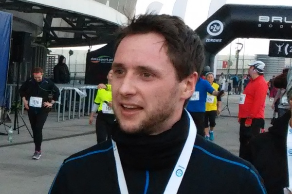
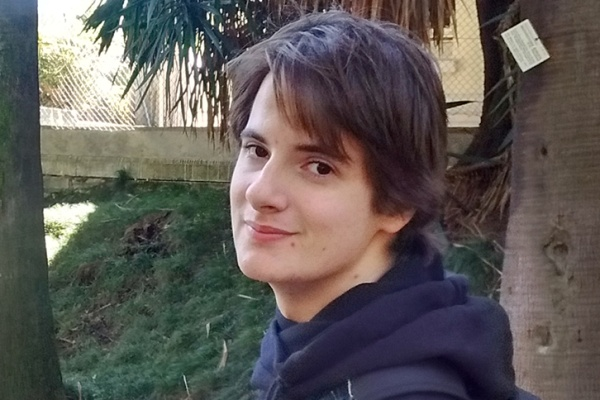
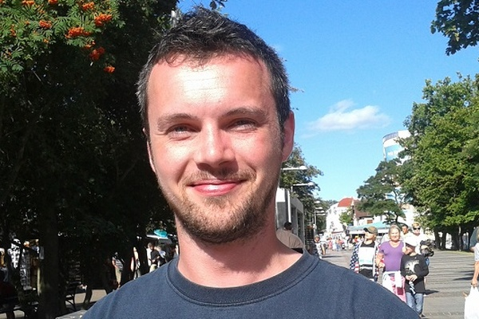

Speakers

Klaus Knopper
Author of
Knoppix - first LiveCD Linux distribution and Adrianne Knoppix - distribution aimed at people with impaired sight.

Maciej "docent" Lasyk
AGH University of Science and Technology in Kraków alumnus, sysadmin at Ocado, Fedora contributor and a cyclist.
Michał Smyk
ASP.NET programmer and Academic IT Association president. In his spare time he works on AI.

Błażej "Mewp" Święcicki
Sysadmin, programmer, Linux fan and former Academic IT Association president. Staunch opponent of Facebook and other centralized services.

Robert "BoBsoN" Partyka
Vicepresident of Polish Linux User's Group. Programmer, fan of innovative technolgies and sci-fi literature. Deeply involved in initiatives promoting free and open-source software.

Krzysztof Opasiak
System and Kernel Engineer in Samsung R&D Institute Poland. USB and Linux enthusiast. libusbgx maintainer and mountains lover.

Bartłomiej Święcki
Programmer, DevOp, old-time Linux User and open-source supporter. Currently working as a developer of data storage systems in OVH. Runner, Linux video games lover, enthusiast of new programming languages and cryptography.

Bartłomiej Piotrowski
Arch and Alpine Linux developer and administrator. OpenStack engineer at Mirantis. Enthusiast of unconfigruable desktop environments and incompatible APIs.

Jakub Juszczakiewicz
Student at Wrocław University of Technology, C++ programmer and a Linux enthusiast. ASI alumnus. Enjoys open-source software and open air activities of all kinds.
Jakub Machałek
Philosopher, free and open-source software enthusiast. Believes that technolgical solutions used in education and culture should be free and open. Currently working on open-source centric workflow is video post-processing studios.
Aleksander Zdyb
Free software developer and enthusiast. Particularly interested in embedded systems security. Plays video games in his spare time.

Michał Kowalczyk
Experienced software engineer working mostly on Linux-based soltions. Mostly interested in systems programming for ARM-based devices. In his free time he works on technologies related to Internet of Things
Paweł Wieczorek
Release engineer at Samsung R&D Institute Poland. Free and open-source software enthusiast. Daily routines automation supporter.